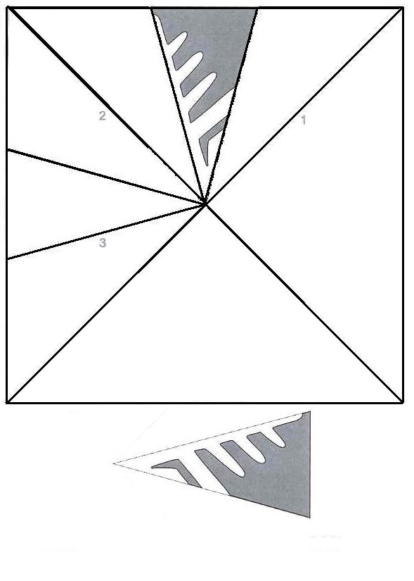

Как сделать снежинку
Если вы еще не решили, как украсить дом к новогодним
праздникам, то предлагаем несколько вариантов того, как
создать праздничную атмосферу при помощи индивидуальных
бумажных снежинок. 
Для красоты снежинок используйте разноцветную бумагу, а для легкости вырезания используйте трафареты. Вместо трафаретов подойдет и ваша фантазия. Снежинки из толстой бумаги будут прочнее, но их сложнее сделать симметричными.
Способ певый - В первую очередь найдите ножницы и сделайте из бумаги квадрат. Затем, начинайте складывать бумагу так, чтобы в итоге получился треугольник. Таким образом должна получиться 1/8 квадрата, т.е. всего вы должны были сложить одну и туже бумажку три раза.
Нарисуйте с одной стороны бумаги любой рисунок который будет легко вырезать. Заготовка для снежинки готова, можно вырезать. Когда закончите вырезать, разверните лист бумаги и оцените что получилось.
Для заготовки красивой снежинки используйте наш шаблон. Просто распечатайте его, сверните в правильном порядке и вырезайте по светлой линии.
Способ второй - положите на лист бумаги формата А4 тарелку или любой другой круглый предмет, который не будет выходить за края. Обведите ее простым карандашом и вырежьте получившийся круг. Затем начинайте складывать круг пополам, до тех пор, пока также не останется 1\8 часть. Далее вы уже сами знаете что делать.
Вырезанные снежинки могут подойти для любых праздников как украшения и узоры для подарков, вещей в доме, для изготовления елочных игрушек.